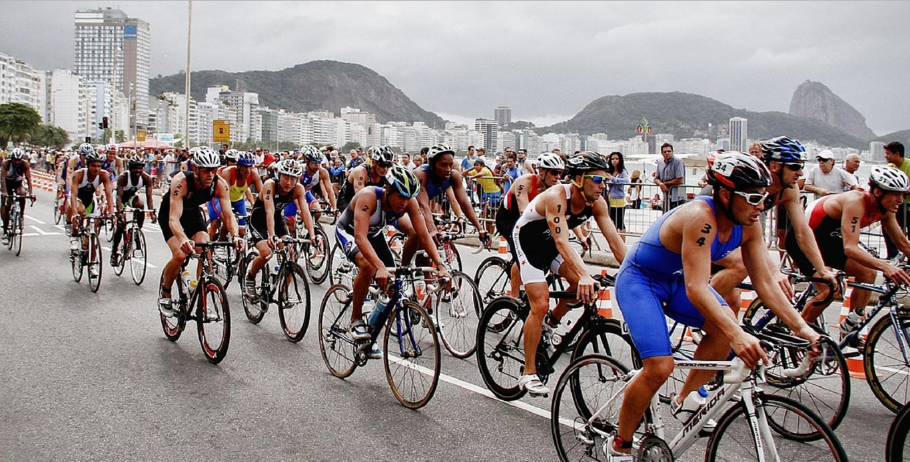

LA NAVARCLINA
Tierra en Navarcles
Catalunya | Barcelona
10 km en 36 min. 25 s.
CURSA DEL SOT DE
MONISTROL DE CALDERS
Montaña en Monistrol de Calders
Catalunya | Barcelona
10.8 km en 55 min. 53 s.
VERTICALCABANERA
Montaña en Capdella
Catalunya | Lleida
5.2 km en 1 h. 10 min. 9 s.
Vª CLASSICA A L'OLLA
DE VALL DE NÚRIA
Montaña en Ribes / Queralbs
Catalunya | Girona
22 km en 2 h. 41 min. 6 s.
CURSA CUITA EL SOL MILLA VERTICAL
Montaña en Àreu
Catalunya | Lleida
5.5 km en 1 h. 14 min. 18 s.